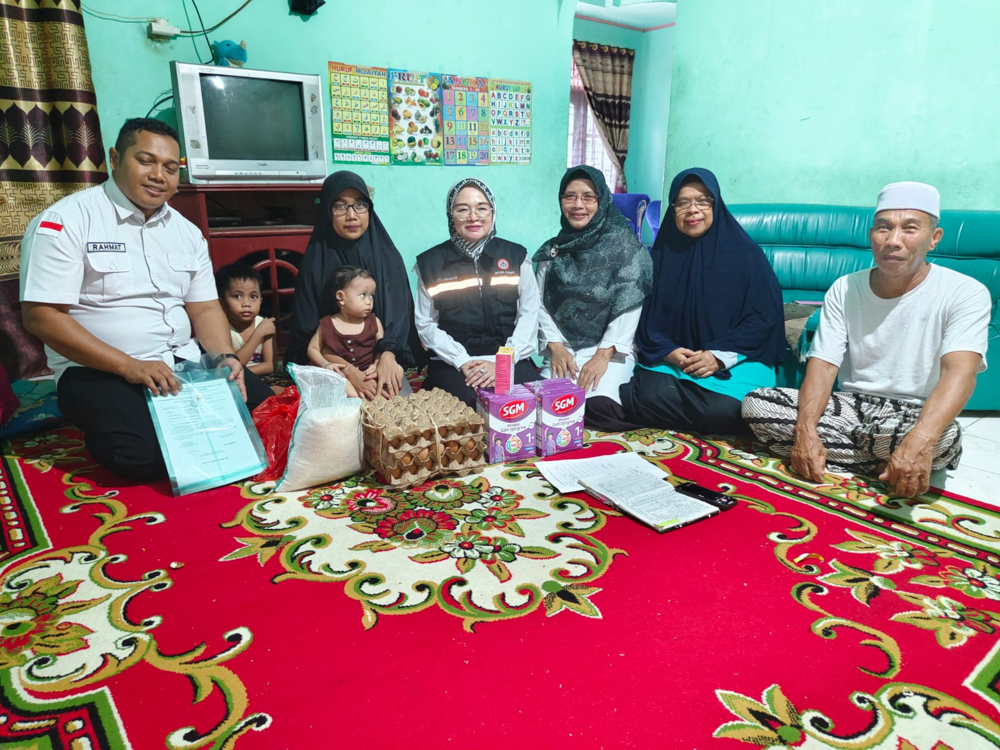

Kegiatan Intervensi Jumlah Anak Stunting di Wilayah Kerja UPT Puskesmas Kuok oleh Yulisa Siregar berlisensi di bawah lisensi Attribution-NonCommercial-ShareAlike 4.0 International (Attribusi-NonKomersial-BerbagiSerupa)



Stunting merupakan suatu masalah gizi kronis yang disebabkan oleh beberapa faktor, yang mana, faktor terbesarnya ialah nutrisi dan hormon pertumbuhan yang kurang. Stunting merupakan masalah kesehatan yang harus ditangani secara serius. Hal ini berdasarkan hasil olah data yang dilakukan oleh Riset Kesehatan Dasar (Riskesdas), yang menemukan bahwa angka stunting yang melambung cukup tinggi, yaitu 36.8% pada tahun 2007, dan pada tahun 2013 mencapai 37.2% dari 33 provinsi di Indonesia. Secara global, angka ini menunjukkan bahwa Indonesia masih memiliki kasus kekurangan gizi\(\textemdash\)terutama masalah stunting\(\textemdash\)yang tidak sedikit. Karena, World Health Organization (WHO) menetapkan, bahwa, suatu kasus kekurangan gizi pada suatu negara termasuk ke dalam kategori rendah apabila persentasi kasus tersebut di bawah 20%.
\(\qquad\)Dengan jumlah angka anak stunting yang tidak sedikit, Tim Percepatan Penurunan Stunting (TPPS) bersama dengan Tim Pelaksana Gizi (TPS) Unit Pelayanan Terpadu Pusat Kesehatan Masyarakat Kuok (UPT. Puskesmas Kuok) melaksanakan kegiatan intervensi jumlah anak stunting. Perlu diketahui bahwa terdapat 9 desa yang merupakan cakupan wilayah kerja UPT Puskesmas Kuok, yaitu:
- Desa Kuok
- Desa Merangin
- Desa Empat Balay
- Desa Pulau Jambu
- Desa Pulau Terap
- Desa Lereng
- Desa Silam
- Desa Batu Langka Kecil
- Desa Bukit Melintang
Kegiatan intervensi terdiri atas 2 tahap utama, yaitu tahap validasi dan tahap pemberian bantuan. Validasi dilakukan pada tanggal 4 Januari 2024. Pada tahap ini, TPPS dan TPG UPT. Puskesmas Kuok turun ke wilayah kerja, mengunjungi rumah ke rumah warga desa dan memvalidasi keluarga yang mana anaknya teridentifikasi dan/atau berpotensi stunting. Tahap validasi ini berguna untuk keefektifan tahap pemberian bantuan. Berikut merupakan video tahap validasi
Tahap pemberian bantuan dilakukan pada tanggal 24 Januari 2024. Pada tahap ini, rumah-rumah warga desa yang sudah divalidasi diberikan bantuan berupa:
- 6 kotak susu
- 3 papan telur
- 5 Kg beras
- 2 botol vitamin
Keluarga yang sudah divalidasi dan diberikan bantuan akan diperhatikan bagaimana pertumbuhan gizi anak mereka. Berikut merupakan video tahap pemberian bantuan.
\(\qquad\)Kegiatan intervensi jumlah anak stunting ini hingga sekarang masih digencarkan oleh TPG dan TPPS. Kegiatan intervensi ini merupakan bentuk usaha nyata oleh TPPS bersama TPG UPT. Puskesmas Kuok dalam mengurangi jumlah angka anak stunting di Indonesia, khususnya di wilayah kerja UPT. Puskesmas Kuok.